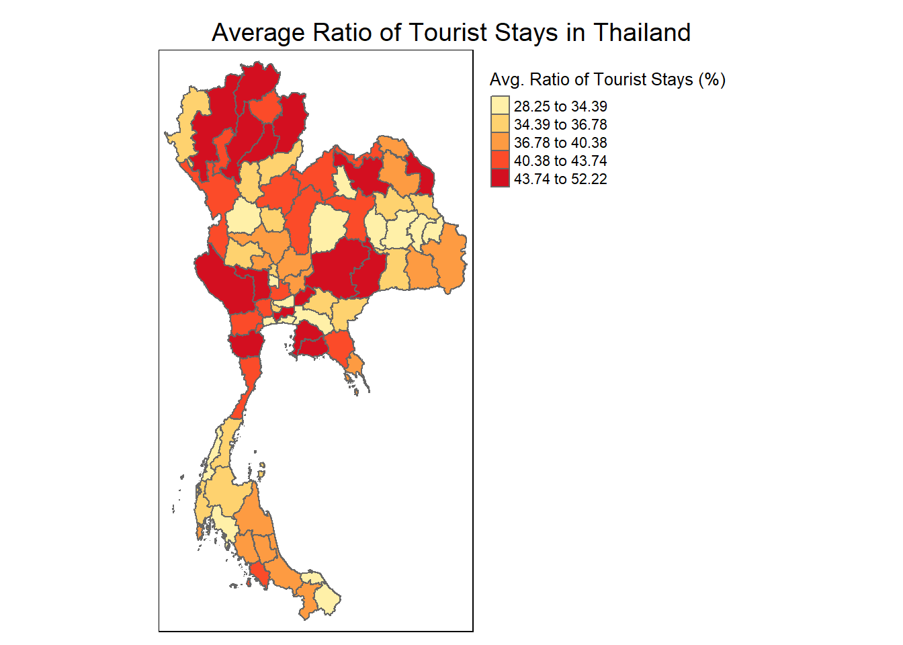
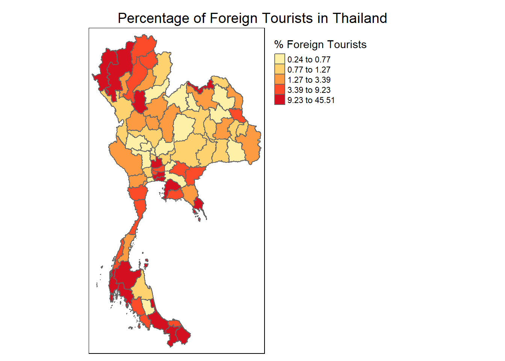
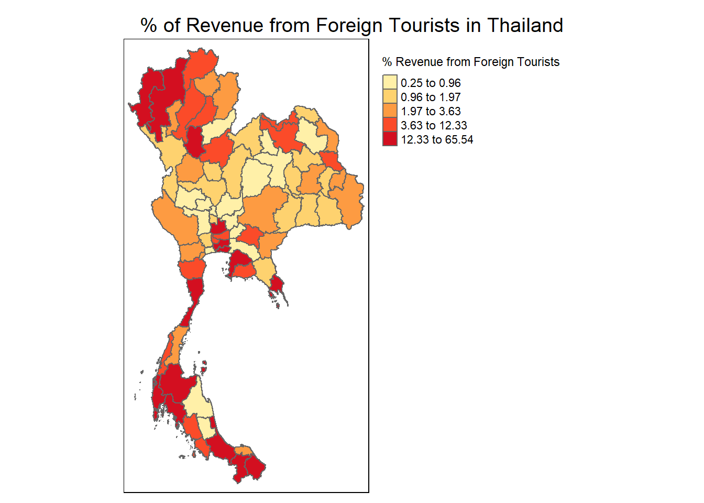
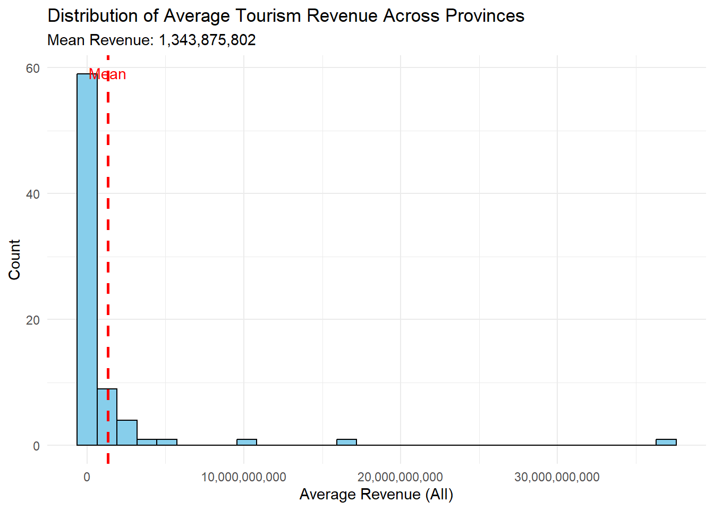
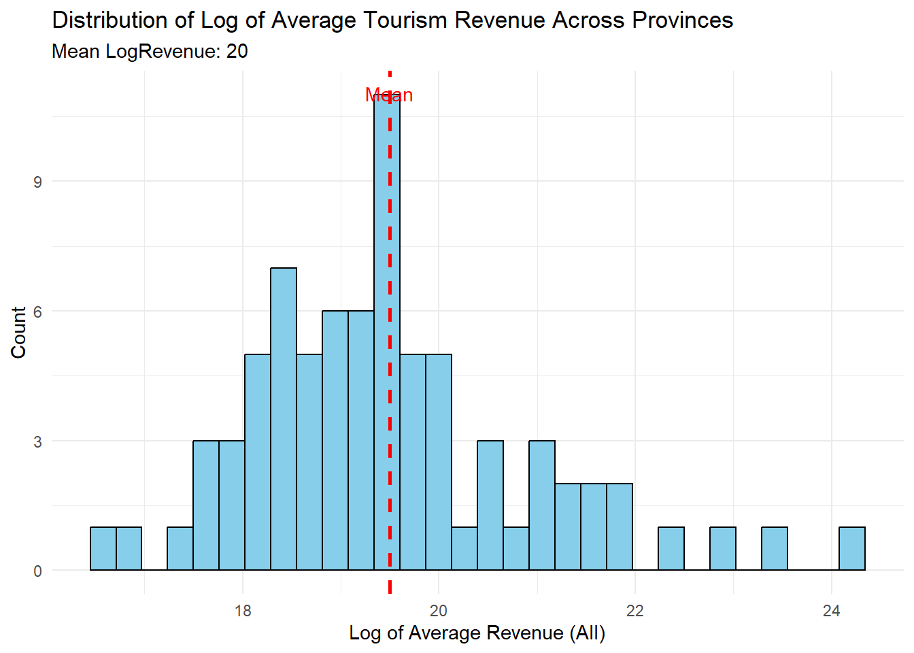
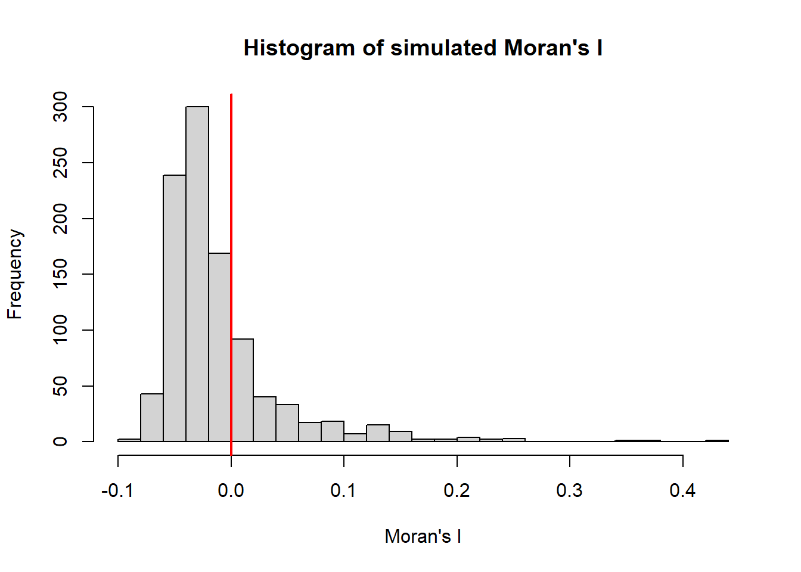
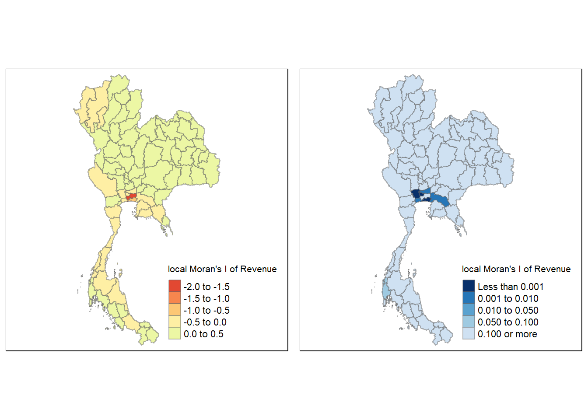
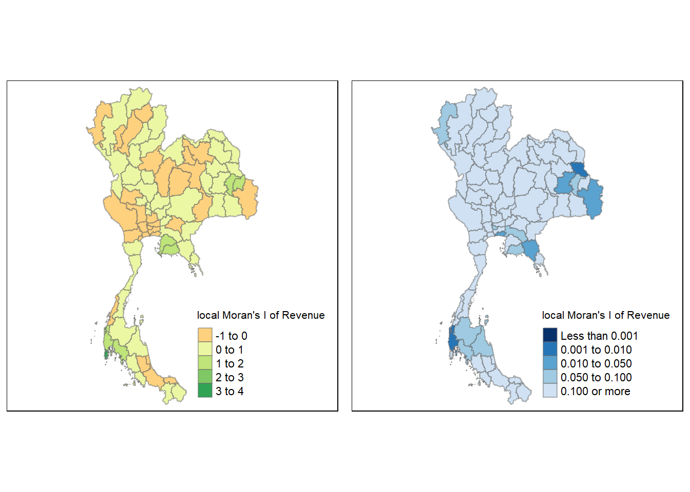
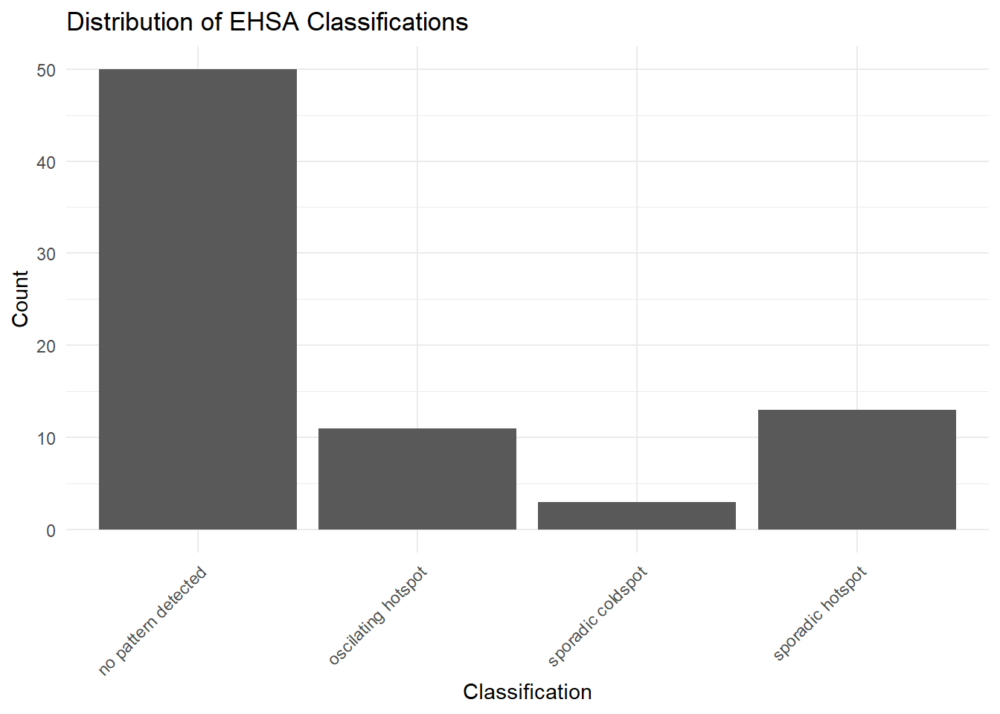
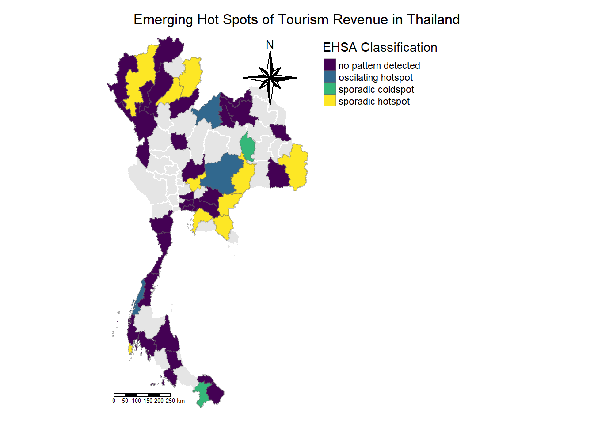

Tourism plays a vital role in Thailand’s economy, contributing significantly to its gross domestic product (GDP). In 2019, the country’s tourism sector generated S$106 billion from both domestic and international visitors, accounting for approximately 20% of the nation’s GDP. In comparison, Singapore’s tourism contributes to only 3-4% of our GDP.
However, the COVID-19 pandemic dealt a severe blow to this thriving industry, causing revenues to plummet to S$31 billion in 2020.
Despite this setback, recent data indicates a gradual recovery in Thailand’s tourism sector. However, it is crucial to note that the tourism economy is not uniformly distributed across the country. Three provinces—Bangkok, Phuket, and Chiang Mai—have historically been the focal points of Thailand’s tourism industry.
Given this context, this report aims to conduct a comprehensive spatial and spatio-temporal analysis of Thailand’s tourism economy at the province level, with a particular focus on the impacts of COVID-19. The primary objectives of this study are:
To determine whether key indicators of Thailand’s tourism economy exhibit spatial and spatio-temporal dependence.
If such dependence is established, to identify clusters, outliers, and emerging hot/cold spot areas within the country.
To achieve these objectives, this report will employ various spatial and spatio-temporal statistical methods, including:
Global spatial autocorrelation analysis
Local spatial autocorrelation analysis
Emerging hotspot analysis
By utilising these geospatial analytics techniques, this study seeks to provide insights into the changing dynamics of Thailand’s tourism economy in the wake of the COVID-19 pandemic. These findings could prove useful for policymakers, industry stakeholders, and researchers in understanding the spatial patterns of tourism recovery and planning for resilience in the sector.
Set up
# Load required librariespacman::p_load( tidyverse, # for data manipulation and visualization sf, # for spatial data handling sfdep, # for spatial dependence in sf tmap, # for thematic maps lubridate, # for date/time manipulation ggplot2, # for advanced plotting plotly, # for plotly tool readr # for importing data)set.seed(1234)# Import the shapefilethailand <-st_read("data/tha_admbnda_adm1_rtsd_20220121.shp")
Reading layer `tha_admbnda_adm1_rtsd_20220121' from data source
`C:\zzzzzuu\ISSS626GAA\Take-home_Ex\Take-home_Ex02\data\tha_admbnda_adm1_rtsd_20220121.shp'
using driver `ESRI Shapefile'
Simple feature collection with 77 features and 16 fields
Geometry type: MULTIPOLYGON
Dimension: XY
Bounding box: xmin: 97.34336 ymin: 5.613038 xmax: 105.637 ymax: 20.46507
Geodetic CRS: WGS 84
# Import the CSV filetourism_data <-read_csv("data/thailand_domestic_tourism_2019_2023_ver2.csv")
Rows: 30800 Columns: 7
── Column specification ────────────────────────────────────────────────────────
Delimiter: ","
chr (5): province_thai, province_eng, region_thai, region_eng, variable
dbl (1): value
date (1): date
ℹ Use `spec()` to retrieve the full column specification for this data.
ℹ Specify the column types or set `show_col_types = FALSE` to quiet this message.
# Display the first few rows and structure of the data to checkprint(head(tourism_data))
# A tibble: 6 × 7
date province_thai province_eng region_thai region_eng variable value
<date> <chr> <chr> <chr> <chr> <chr> <dbl>
1 2019-01-01 กรุงเทพมหานคร Bangkok ภาคกลาง central ratio_t… 93.4
2 2019-01-01 ลพบุรี Lopburi ภาคกลาง central ratio_t… 61.3
3 2019-01-01 พระนครศรีอยุธยา Phra Nakhon Si… ภาคกลาง central ratio_t… 73.4
4 2019-01-01 สระบุรี Saraburi ภาคกลาง central ratio_t… 67.3
5 2019-01-01 ชัยนาท Chainat ภาคกลาง central ratio_t… 79.3
6 2019-01-01 นครปฐม Nakhon Pathom ภาคกลาง central ratio_t… 71.7
# Check for any missing valuessum(is.na(tourism_data))
[1] 0
# Clean and prepare the datatourism_data_clean <- tourism_data %>%# Remove any rows with missing valuesna.omit() %>%mutate(province_eng =toupper(province_eng))# Display the first few rows of the cleaned dataprint(head(tourism_data_clean))
# A tibble: 6 × 7
date province_thai province_eng region_thai region_eng variable value
<date> <chr> <chr> <chr> <chr> <chr> <dbl>
1 2019-01-01 กรุงเทพมหานคร BANGKOK ภาคกลาง central ratio_t… 93.4
2 2019-01-01 ลพบุรี LOPBURI ภาคกลาง central ratio_t… 61.3
3 2019-01-01 พระนครศรีอยุธยา PHRA NAKHON SI… ภาคกลาง central ratio_t… 73.4
4 2019-01-01 สระบุรี SARABURI ภาคกลาง central ratio_t… 67.3
5 2019-01-01 ชัยนาท CHAINAT ภาคกลาง central ratio_t… 79.3
6 2019-01-01 นครปฐม NAKHON PATHOM ภาคกลาง central ratio_t… 71.7
# Pivot the data to have variables as columnstourism_wide <- tourism_data_clean %>%pivot_wider(id_cols =c(province_eng, date),names_from = variable,values_from = value )tourism_wide <- tourism_wide %>%mutate(province_eng =case_when( province_eng =="PHANG NGA"~"PHANGNGA", province_eng =="LOPBURI"~"LOP BURI", province_eng =="CHAINAT"~"CHAI NAT", province_eng =="CHONBURI"~"CHON BURI", province_eng =="PRACHINBURI"~"PRACHIN BURI", province_eng =="BURIRAM"~"BURI RAM", province_eng =="SISAKET"~"SI SA KET", province_eng =="NONG BUA LAMPHU"~"NONG BUA LAM PHU",TRUE~ province_eng # Keep other names unchanged ))# Display the wide format dataprint(head(tourism_wide))
“ratio_tourist_stay”: Refers to the ratio of tourists who stay overnight.
“no_tourist_stay”: Refers to the number of tourists who stay overnight.
“no_tourist_all”: Refers to the total number of tourists.
“no_tourist_thai”: Refers to the number of domestic Thai tourists.
“no_tourist_foreign”: Refers to the number of foreign tourists.
“revenue_all”: Refers to total tourism revenue.
“revenue_thai”: Refers to revenue from domestic tourists.
“revenue_foreign”: Refers to revenue from foreign tourists.
Join data
# Calculate average values for each province across all time periodstourism_summary <- tourism_wide %>%group_by(province_eng) %>%summarise(avg_ratio_tourist_stay =mean(ratio_tourist_stay, na.rm =TRUE),avg_no_tourist_stay =mean(no_tourist_stay, na.rm =TRUE),avg_no_tourist_all =mean(no_tourist_all, na.rm =TRUE),avg_no_tourist_thai =mean(no_tourist_thai, na.rm =TRUE),avg_no_tourist_foreign =mean(no_tourist_foreign, na.rm =TRUE),avg_revenue_all =mean(revenue_all, na.rm =TRUE),avg_revenue_thai =mean(revenue_thai, na.rm =TRUE),avg_revenue_foreign =mean(revenue_foreign, na.rm =TRUE),pct_foreign_tourists =mean(no_tourist_foreign / no_tourist_all *100, na.rm =TRUE),pct_foreign_revenue =mean(revenue_foreign / revenue_all *100, na.rm =TRUE) )tourism_summary <- tourism_summary %>%mutate(province_eng =case_when( province_eng =="PHANG NGA"~"PHANGNGA", province_eng =="LOPBURI"~"LOP BURI", province_eng =="CHAINAT"~"CHAI NAT", province_eng =="CHONBURI"~"CHON BURI", province_eng =="PRACHINBURI"~"PRACHIN BURI", province_eng =="BURIRAM"~"BURI RAM", province_eng =="SISAKET"~"SI SA KET", province_eng =="NONG BUA LAMPHU"~"NONG BUA LAM PHU",TRUE~ province_eng # Keep other names unchanged ))# Join the summary data with the spatial datathailand_tourism <- thailand_utm %>%mutate(ADM1_EN =toupper(ADM1_EN)) %>%left_join(tourism_summary, by =c("ADM1_EN"="province_eng"))
Take a look at chloropleth maps
# Map of average ratio of tourist staystm_shape(thailand_tourism) +tm_fill("avg_ratio_tourist_stay", style ="quantile", palette ="YlOrRd",title ="Avg. Ratio of Tourist Stays (%)") +tm_borders() +tm_layout(main.title ="Average Ratio of Tourist Stays in Thailand",main.title.position ="center",main.title.size =1.2,legend.outside =TRUE,legend.outside.position ="right")

# Map of average total revenuetm_shape(thailand_tourism) +tm_fill("avg_revenue_all", style ="quantile", palette ="YlOrRd",title ="Avg. Total Revenue (Baht)") +tm_borders() +tm_layout(main.title ="Average Total Tourism Revenue in Thailand",main.title.position ="center",main.title.size =1.2,legend.outside =TRUE,legend.outside.position ="right")
# Map of percentage of foreign touriststm_shape(thailand_tourism) +tm_fill("pct_foreign_tourists", style ="quantile", palette ="YlOrRd",title ="% Foreign Tourists") +tm_borders() +tm_layout(main.title ="Percentage of Foreign Tourists in Thailand",main.title.position ="center",main.title.size =1.2,legend.outside =TRUE,legend.outside.position ="right")

# Map of percentage of revenue from foreign touriststm_shape(thailand_tourism) +tm_fill("pct_foreign_revenue", style ="quantile", palette ="YlOrRd",title ="% Revenue from Foreign Tourists") +tm_borders() +tm_layout(main.title ="% of Revenue from Foreign Tourists in Thailand",main.title.position ="center",main.title.size =1.2,legend.outside =TRUE,legend.outside.position ="right")

Average Ratio of Tourist Stays in Thailand: This map shows the percentage of tourists who stay overnight in different regions of Thailand. The northern and central regions appear to have higher ratios of tourist stays (40-52%), indicated by the darker red colors. This suggests these areas may have more developed accommodation infrastructure or attractions that encourage longer visits. Coastal areas in the south show a mix of high and low stay ratios, possibly reflecting differences between popular beach resorts and transit areas.
Average Total Tourism Revenue in Thailand: The revenue map highlights significant disparities in tourism income across Thailand. Major tourist destinations like Bangkok, Phuket, and Chiang Mai (identifiable by the dark red areas) generate substantially higher revenues, ranging from 841 million to 36,939 million Baht. This concentration of revenue suggests a highly uneven distribution of tourism benefits across the country, with a few key areas dominating the industry.
Percentage of Foreign Tourists in Thailand: This map illustrates the distribution of international visitors. Coastal areas and major cities show the highest percentages of foreign tourists (9.23% to 45.51%), particularly in the south and around Bangkok. This pattern likely reflects the popularity of beach destinations and cultural sites among international travelers. Interior and northern regions generally have lower percentages of foreign visitors, suggesting a greater reliance on domestic tourism.
Percentage of Revenue from Foreign Tourists in Thailand: The revenue contribution from foreign tourists closely mirrors the distribution of foreign visitors. Coastal areas and major tourist hubs show the highest percentages (12.33% to 65.54%) of revenue from international visitors. This indicates that these regions not only attract more foreign tourists but also derive a significant portion of their tourism income from them. The pattern underscores the economic importance of international tourism to these areas and their potential vulnerability to global travel disruptions.
These show an average of Thailand’s tourism landscape, possibly cluing us into regional disparities in tourist stays, overall revenue, and the role of international visitors in the country’s tourism economy.
Let’s take a look at the bar chart.
# Create the histogrammean_revenue <-mean(tourism_summary$avg_revenue_all, na.rm =TRUE)ggplot(tourism_summary, aes(x = avg_revenue_all)) +geom_histogram(bins =30, fill ="skyblue", color ="black") +geom_vline(xintercept = mean_revenue, color ="red", linetype ="dashed", size =1) +annotate("text", x = mean_revenue, y =Inf, label ="Mean", vjust =2, color ="red") +theme_minimal() +labs(title ="Distribution of Average Tourism Revenue Across Provinces",subtitle =paste("Mean Revenue:", scales::comma(mean_revenue)),x ="Average Revenue (All)",y ="Count") +scale_x_continuous(labels = scales::comma)
Warning: Using `size` aesthetic for lines was deprecated in ggplot2 3.4.0.
ℹ Please use `linewidth` instead.

mean_revenue_log <-mean(log(tourism_summary$avg_revenue_all), na.rm =TRUE)ggplot(tourism_summary, aes(x =log(avg_revenue_all))) +geom_histogram(bins =30, fill ="skyblue", color ="black") +geom_vline(xintercept = mean_revenue_log, color ="red", linetype ="dashed", size =1) +annotate("text", x = mean_revenue_log, y =Inf, label ="Mean", vjust =2, color ="red") +theme_minimal() +labs(title ="Distribution of Log of Average Tourism Revenue Across Provinces",subtitle =paste("Mean LogRevenue:", scales::comma(mean_revenue_log)),x ="Log of Average Revenue (All)",y ="Count") +scale_x_continuous(labels = scales::comma)

Using log removes the skewness of the data and possibly can help us account for more of Thailand’s tourism activity. This accounts for the outlier that is Bangkok, which naturally gains more turism receipts than other provinces.
Global Moran’s I test
Monte Carlo Moran’s I is a statistical technique used to assess whether the spatial pattern observed in data is significantly different from what would be expected by random chance alone.
In this analysis, I will perform Moran’s I test on both the average revenue (avg_revenue_all) and its logarithmic transformation (log(avg_revenue_all)) to gain a more comprehensive understanding of the spatial autocorrelation patterns in Thailand’s tourism revenue. This approach is taken because tourism revenue data has a skewed distribution, with a few provinces generating significantly higher revenues than others. By using the raw average revenue, we can identify spatial patterns in the absolute economic impact of tourism across provinces. However, this may be dominated by extreme values in high-revenue areas. The log transformation, on the other hand, helps to normalise the data distribution, reducing the impact of outliers and allowing us to detect spatial patterns in the relative differences of tourism performance across provinces. This transformation can reveal subtler spatial relationships that might be obscured in the raw data. The differing results between these two tests can provide insights into whether the spatial clustering is driven primarily by absolute revenue values or by proportional differences between provinces, offering a more nuanced view of the spatial dynamics in Thailand’s tourism economy.
First let’s test whether the average total revenue happened by random chance. To do so, we first need a contiguity matric. We’ll use queen’s contiguity.
# Calculate queen's contiguitythailand_nb <-st_contiguity(thailand_tourism, queen =TRUE)# Identify regions with no neighborsno_neighbors <-which(sapply(thailand_nb, function(x) x[1] ==0))no_neighbors
[1] 67
# Manually add nearest neighbor for regions with no neighborsthailand_nb[[67]] <-as.integer(66)thailand_nb[[66]] <-as.integer(unique(c(thailand_nb[[66]], 67)))str(thailand_nb)
List of 77
$ : int [1:6] 2 3 4 15 59 60
$ : int [1:2] 1 15
$ : int [1:4] 1 4 5 59
$ : int [1:6] 1 3 5 10 15 17
$ : int [1:7] 3 4 6 7 10 58 59
$ : int [1:4] 5 7 8 58
$ : int [1:8] 5 6 8 10 19 25 48 55
$ : int [1:5] 6 7 9 48 58
$ : int [1:4] 8 48 49 58
$ : int [1:5] 4 5 7 17 19
$ : int [1:3] 12 13 15
$ : int [1:2] 11 13
$ : int [1:5] 11 12 14 15 18
$ : int 13
$ : int [1:8] 1 2 4 11 13 16 17 18
$ : int [1:4] 15 17 18 19
$ : int [1:5] 4 10 15 16 19
$ : int [1:5] 13 15 16 19 20
$ : int [1:8] 7 10 16 17 18 20 25 29
$ : int [1:5] 18 19 21 29 33
$ : int [1:4] 20 22 33 34
$ : int [1:4] 21 23 24 34
$ : int [1:3] 22 24 26
$ : int [1:5] 22 23 26 34 38
$ : int [1:4] 7 19 29 55
$ : int [1:3] 23 24 38
$ : int [1:3] 32 36 37
$ : int [1:3] 29 30 31
$ : int [1:9] 19 20 25 28 30 31 33 35 55
$ : int [1:6] 28 29 31 32 35 36
$ : int [1:6] 28 29 30 32 53 55
$ : int [1:4] 27 30 31 36
$ : int [1:5] 20 21 29 34 35
$ : int [1:6] 21 22 24 33 35 38
$ : int [1:6] 29 30 33 34 36 38
$ : int [1:6] 27 30 32 35 37 38
$ : int [1:3] 27 36 38
$ : int [1:6] 24 26 34 35 36 37
$ : int [1:5] 40 41 46 47 51
$ : int [1:3] 39 41 51
$ : int [1:7] 39 40 43 45 46 51 52
$ : int [1:4] 43 44 52 53
$ : int [1:5] 41 42 44 45 52
$ : int [1:3] 42 43 45
$ : int [1:4] 41 43 44 46
$ : int [1:3] 39 41 45
$ : int [1:2] 39 51
$ : int [1:8] 7 8 9 49 50 51 54 55
$ : int [1:5] 9 48 51 57 58
$ : int [1:5] 48 51 52 53 54
$ : int [1:9] 39 40 41 47 48 49 50 52 57
$ : int [1:6] 41 42 43 50 51 53
$ : int [1:6] 31 42 50 52 54 55
$ : int [1:4] 48 50 53 55
$ : int [1:7] 7 25 29 31 48 53 54
$ : int [1:5] 57 59 60 61 62
$ : int [1:5] 49 51 56 58 59
$ : int [1:7] 5 6 8 9 49 57 59
$ : int [1:7] 1 3 5 56 57 58 60
$ : int [1:4] 1 56 59 61
$ : int [1:3] 56 60 62
$ : int [1:3] 56 61 63
$ : int [1:2] 62 70
$ : int [1:5] 65 68 71 73 74
$ : int [1:4] 64 66 68 73
$ : int [1:4] 65 68 69 67
$ : int 66
$ : int [1:5] 64 65 66 69 70
$ : int [1:3] 66 68 70
$ : int [1:3] 63 68 69
$ : int [1:5] 64 72 74 75 76
$ : int [1:3] 71 73 74
$ : int [1:4] 64 65 72 74
$ : int [1:4] 64 71 72 73
$ : int [1:3] 71 76 77
$ : int [1:3] 71 75 77
$ : int [1:2] 75 76
- attr(*, "class")= chr [1:2] "nb" "list"
- attr(*, "region.id")= chr [1:77] "1" "2" "3" "4" ...
- attr(*, "call")= language spdep::poly2nb(pl = geometry, queen = queen)
- attr(*, "type")= chr "queen"
- attr(*, "sym")= logi TRUE
# Link Phuket to Phang Nga and vice versa because they are linked by bridge# Check is still got emptyno_neighbors <-which(sapply(thailand_nb, function(x) x[1] ==0))no_neighbors
Classes 'sf' and 'data.frame': 77 obs. of 29 variables:
$ nb :List of 77
..$ : int 2 3 4 15 59 60
..$ : int 1 15
..$ : int 1 4 5 59
..$ : int 1 3 5 10 15 17
..$ : int 3 4 6 7 10 58 59
..$ : int 5 7 8 58
..$ : int 5 6 8 10 19 25 48 55
..$ : int 6 7 9 48 58
..$ : int 8 48 49 58
..$ : int 4 5 7 17 19
..$ : int 12 13 15
..$ : int 11 13
..$ : int 11 12 14 15 18
..$ : int 13
..$ : int 1 2 4 11 13 16 17 18
..$ : int 15 17 18 19
..$ : int 4 10 15 16 19
..$ : int 13 15 16 19 20
..$ : int 7 10 16 17 18 20 25 29
..$ : int 18 19 21 29 33
..$ : int 20 22 33 34
..$ : int 21 23 24 34
..$ : int 22 24 26
..$ : int 22 23 26 34 38
..$ : int 7 19 29 55
..$ : int 23 24 38
..$ : int 32 36 37
..$ : int 29 30 31
..$ : int 19 20 25 28 30 31 33 35 55
..$ : int 28 29 31 32 35 36
..$ : int 28 29 30 32 53 55
..$ : int 27 30 31 36
..$ : int 20 21 29 34 35
..$ : int 21 22 24 33 35 38
..$ : int 29 30 33 34 36 38
..$ : int 27 30 32 35 37 38
..$ : int 27 36 38
..$ : int 24 26 34 35 36 37
..$ : int 40 41 46 47 51
..$ : int 39 41 51
..$ : int 39 40 43 45 46 51 52
..$ : int 43 44 52 53
..$ : int 41 42 44 45 52
..$ : int 42 43 45
..$ : int 41 43 44 46
..$ : int 39 41 45
..$ : int 39 51
..$ : int 7 8 9 49 50 51 54 55
..$ : int 9 48 51 57 58
..$ : int 48 51 52 53 54
..$ : int 39 40 41 47 48 49 50 52 57
..$ : int 41 42 43 50 51 53
..$ : int 31 42 50 52 54 55
..$ : int 48 50 53 55
..$ : int 7 25 29 31 48 53 54
..$ : int 57 59 60 61 62
..$ : int 49 51 56 58 59
..$ : int 5 6 8 9 49 57 59
..$ : int 1 3 5 56 57 58 60
..$ : int 1 56 59 61
..$ : int 56 60 62
..$ : int 56 61 63
..$ : int 62 70
..$ : int 65 68 71 73 74
..$ : int 64 66 68 73
..$ : int 65 68 69 67
..$ : int 66
..$ : int 64 65 66 69 70
..$ : int 66 68 70
..$ : int 63 68 69
..$ : int 64 72 74 75 76
..$ : int 71 73 74
..$ : int 64 65 72 74
..$ : int 64 71 72 73
..$ : int 71 76 77
..$ : int 71 75 77
..$ : int 75 76
..- attr(*, "class")= chr [1:2] "nb" "list"
..- attr(*, "region.id")= chr [1:77] "1" "2" "3" "4" ...
..- attr(*, "call")= language spdep::poly2nb(pl = geometry, queen = queen)
..- attr(*, "type")= chr "queen"
..- attr(*, "sym")= logi TRUE
$ wt :List of 77
..$ : num 0.167 0.167 0.167 0.167 0.167 ...
..$ : num 0.5 0.5
..$ : num 0.25 0.25 0.25 0.25
..$ : num 0.167 0.167 0.167 0.167 0.167 ...
..$ : num 0.143 0.143 0.143 0.143 0.143 ...
..$ : num 0.25 0.25 0.25 0.25
..$ : num 0.125 0.125 0.125 0.125 0.125 0.125 0.125 0.125
..$ : num 0.2 0.2 0.2 0.2 0.2
..$ : num 0.25 0.25 0.25 0.25
..$ : num 0.2 0.2 0.2 0.2 0.2
..$ : num 0.333 0.333 0.333
..$ : num 0.5 0.5
..$ : num 0.2 0.2 0.2 0.2 0.2
..$ : num 1
..$ : num 0.125 0.125 0.125 0.125 0.125 0.125 0.125 0.125
..$ : num 0.25 0.25 0.25 0.25
..$ : num 0.2 0.2 0.2 0.2 0.2
..$ : num 0.2 0.2 0.2 0.2 0.2
..$ : num 0.125 0.125 0.125 0.125 0.125 0.125 0.125 0.125
..$ : num 0.2 0.2 0.2 0.2 0.2
..$ : num 0.25 0.25 0.25 0.25
..$ : num 0.25 0.25 0.25 0.25
..$ : num 0.333 0.333 0.333
..$ : num 0.2 0.2 0.2 0.2 0.2
..$ : num 0.25 0.25 0.25 0.25
..$ : num 0.333 0.333 0.333
..$ : num 0.333 0.333 0.333
..$ : num 0.333 0.333 0.333
..$ : num 0.111 0.111 0.111 0.111 0.111 ...
..$ : num 0.167 0.167 0.167 0.167 0.167 ...
..$ : num 0.167 0.167 0.167 0.167 0.167 ...
..$ : num 0.25 0.25 0.25 0.25
..$ : num 0.2 0.2 0.2 0.2 0.2
..$ : num 0.167 0.167 0.167 0.167 0.167 ...
..$ : num 0.167 0.167 0.167 0.167 0.167 ...
..$ : num 0.167 0.167 0.167 0.167 0.167 ...
..$ : num 0.333 0.333 0.333
..$ : num 0.167 0.167 0.167 0.167 0.167 ...
..$ : num 0.2 0.2 0.2 0.2 0.2
..$ : num 0.333 0.333 0.333
..$ : num 0.143 0.143 0.143 0.143 0.143 ...
..$ : num 0.25 0.25 0.25 0.25
..$ : num 0.2 0.2 0.2 0.2 0.2
..$ : num 0.333 0.333 0.333
..$ : num 0.25 0.25 0.25 0.25
..$ : num 0.333 0.333 0.333
..$ : num 0.5 0.5
..$ : num 0.125 0.125 0.125 0.125 0.125 0.125 0.125 0.125
..$ : num 0.2 0.2 0.2 0.2 0.2
..$ : num 0.2 0.2 0.2 0.2 0.2
..$ : num 0.111 0.111 0.111 0.111 0.111 ...
..$ : num 0.167 0.167 0.167 0.167 0.167 ...
..$ : num 0.167 0.167 0.167 0.167 0.167 ...
..$ : num 0.25 0.25 0.25 0.25
..$ : num 0.143 0.143 0.143 0.143 0.143 ...
..$ : num 0.2 0.2 0.2 0.2 0.2
..$ : num 0.2 0.2 0.2 0.2 0.2
..$ : num 0.143 0.143 0.143 0.143 0.143 ...
..$ : num 0.143 0.143 0.143 0.143 0.143 ...
..$ : num 0.25 0.25 0.25 0.25
..$ : num 0.333 0.333 0.333
..$ : num 0.333 0.333 0.333
..$ : num 0.5 0.5
..$ : num 0.2 0.2 0.2 0.2 0.2
..$ : num 0.25 0.25 0.25 0.25
..$ : num 0.25 0.25 0.25 0.25
..$ : num 1
..$ : num 0.2 0.2 0.2 0.2 0.2
..$ : num 0.333 0.333 0.333
..$ : num 0.333 0.333 0.333
..$ : num 0.2 0.2 0.2 0.2 0.2
..$ : num 0.333 0.333 0.333
..$ : num 0.25 0.25 0.25 0.25
..$ : num 0.25 0.25 0.25 0.25
..$ : num 0.333 0.333 0.333
..$ : num 0.333 0.333 0.333
..$ : num 0.5 0.5
..- attr(*, "mode")= chr "binary"
..- attr(*, "W")= logi TRUE
..- attr(*, "comp")=List of 1
.. ..$ d: num [1:77] 6 2 4 6 7 4 8 5 4 5 ...
$ Shape_Leng : num 2.42 1.7 1.25 1.88 3.04 ...
$ Shape_Area : num 0.1313 0.0793 0.0532 0.127 0.2139 ...
$ ADM1_EN : chr "BANGKOK" "SAMUT PRAKAN" "NONTHABURI" "PATHUM THANI" ...
$ ADM1_TH : chr "กรุงเทพมหานคร" "สมุทรปราการ" "นนทบุรี" "ปทุมธานี" ...
$ ADM1_PCODE : chr "TH10" "TH11" "TH12" "TH13" ...
$ ADM1_REF : chr NA NA NA NA ...
$ ADM1ALT1EN : chr NA NA NA NA ...
$ ADM1ALT2EN : chr NA NA NA NA ...
$ ADM1ALT1TH : chr NA NA NA NA ...
$ ADM1ALT2TH : chr NA NA NA NA ...
$ ADM0_EN : chr "Thailand" "Thailand" "Thailand" "Thailand" ...
$ ADM0_TH : chr "ประเทศไทย" "ประเทศไทย" "ประเทศไทย" "ประเทศไทย" ...
$ ADM0_PCODE : chr "TH" "TH" "TH" "TH" ...
$ date : Date, format: "2019-02-18" "2019-02-18" ...
$ validOn : Date, format: "2022-01-22" "2022-01-22" ...
$ validTo : Date, format: "-001-11-30" "-001-11-30" ...
$ avg_ratio_tourist_stay: num 43.8 32 36.4 28.6 42.8 ...
$ avg_no_tourist_stay : num 1508737 48607 48158 24805 60806 ...
$ avg_no_tourist_all : num 3027050 162207 157251 106477 476473 ...
$ avg_no_tourist_thai : num 2137997 118545 149184 91470 417236 ...
$ avg_no_tourist_foreign: num 889053 43662 8067 15007 59237 ...
$ avg_revenue_all : num 3.69e+10 2.81e+08 2.24e+08 1.53e+08 8.76e+08 ...
$ avg_revenue_thai : num 1.48e+10 1.81e+08 2.06e+08 1.22e+08 7.16e+08 ...
$ avg_revenue_foreign : num 2.21e+10 9.94e+07 1.80e+07 3.14e+07 1.60e+08 ...
$ pct_foreign_tourists : num 22.34 17.64 3.6 8.73 9.35 ...
$ pct_foreign_revenue : num 44.95 21.07 5.06 11.56 12.53 ...
$ geometry :sfc_MULTIPOLYGON of length 77; first list element: List of 1
..$ :List of 1
.. ..$ : num [1:8501, 1:2] 674340 674382 674449 674458 674467 ...
..- attr(*, "class")= chr [1:3] "XY" "MULTIPOLYGON" "sfg"
- attr(*, "sf_column")= chr "geometry"
- attr(*, "agr")= Factor w/ 3 levels "constant","aggregate",..: NA NA NA NA NA NA NA NA NA NA ...
..- attr(*, "names")= chr [1:28] "nb" "wt" "Shape_Leng" "Shape_Area" ...
# Perform Monte Carlo simulation for Moran's Imc_moran <-global_moran_test(log(thailand_tourism$avg_revenue_all), thailand_nb, thailand_weights)# Print the resultsprint(mc_moran)
Moran I test under randomisation
data: x
weights: listw
Moran I statistic standard deviate = 2.8404, p-value = 0.002253
alternative hypothesis: greater
sample estimates:
Moran I statistic Expectation Variance
0.204345202 -0.013157895 0.005863852
Moran’s I statistic is close to zero, suggesting weak spatial autocorrelation. A value of -1 indicates perfect dispersion, +1 indicates perfect correlation, and 0 indicates a random spatial pattern.
p-value is > 0.05. This indicates that we fail to reject the null hypothesis of spatial randomness. There is no significant evidence of positive spatial autocorrelation in average total revenue across Thailand’s provinces. The spatial pattern of tourism revenue appears to be randomly distributed, rather than clustered or dispersed.
Let’s take a look at Monte Carlo Simluation
mc_moran_sim <-global_moran_perm( thailand_tourism$avg_revenue_all, thailand_nb, thailand_weights,nsim =999# number of simulations)# Print the resultsprint(mc_moran_sim)
Monte-Carlo simulation of Moran I
data: x
weights: listw
number of simulations + 1: 1000
statistic = -0.030518, observed rank = 464, p-value = 0.928
alternative hypothesis: two.sided
# Visualize the resultshist(mc_moran_sim$res, freq =TRUE, breaks =20, xlab ="Moran's I", main ="Histogram of simulated Moran's I")abline(v =0, col ="red", lwd =2)

It appears that findings are similar to that one the single test.
This suggests that high or low tourism revenue in one province does not necessarily correspond to similar values in neighboring provinces. The economic performance of the tourism sector in each province seems to be independent of its geographical location relative to other provinces. This may be because tourism doesn’t spread out from the popular places. Rather, if tourists are interested in surrounding areas, they would fly straight to that destination.
Or this could be because we used average revenue. Let’s take a look at logged value.
# Perform Monte Carlo simulation for Moran's Imc_moran <-global_moran_test(log(thailand_tourism$avg_revenue_all), thailand_nb, thailand_weights)# Print the resultsprint(mc_moran)
Moran I test under randomisation
data: x
weights: listw
Moran I statistic standard deviate = 2.8404, p-value = 0.002253
alternative hypothesis: greater
sample estimates:
Moran I statistic Expectation Variance
0.204345202 -0.013157895 0.005863852
Moran’s I statistic is positive. It indicates a positive spatial autocorrelation. It suggests that similar values (either high or low) of average revenue tend to cluster together geographically more than would be expected by chance.
p-value is below the significance level of 0.05. It indicates strong evidence against the null hypothesis of spatial randomness. In other words, the spatial pattern observed is very unlikely to have occurred by chance.
The results provide strong evidence of positive spatial autocorrelation in the log-transformed average tourism revenue across Thailand’s provinces. This means that provinces with high tourism revenues tend to be located near other provinces with high revenues, and provinces with low revenues tend to be near other low-revenue provinces.
Let’s try applying this to the change in revenue from Jul 2021 (trough of revenue) and Jan 2023 (one of the peaks in revenue).
revenue_comparison <- tourism_wide %>%filter(date %in%c(as.Date("2021-07-01"), as.Date("2023-01-01"))) %>%select(province_eng, date, revenue_all) %>%pivot_wider(names_from = date, values_from = revenue_all, names_prefix ="revenue_") %>%mutate(delta_jul21_jan23 =`revenue_2023-01-01`-`revenue_2021-07-01`,province_eng =toupper(province_eng) ) %>%select(province_eng, delta_jul21_jan23)# Now, let's join this new data to our existing thailand_tourism dataframethailand_tourism_diff <- thailand_tourism %>%left_join(revenue_comparison, by =c("ADM1_EN"="province_eng"))mc_moran_diff <-global_moran_perm( thailand_tourism_diff$delta_jul21_jan23, thailand_nb, thailand_weights,nsim=999)# Print the resultsprint(mc_moran_diff)
Monte-Carlo simulation of Moran I
data: x
weights: listw
number of simulations + 1: 1000
statistic = -0.039269, observed rank = 280, p-value = 0.56
alternative hypothesis: two.sided
Based on these results, there is no significant evidence of spatial autocorrelation in the changes in tourism revenue across Thailand’s provinces between July 2021 and January 2023. The spatial pattern of revenue changes appears to be randomly distributed, rather than clustered or dispersed.
This suggests that the recovery (or changes) in tourism revenue from July 2021 to January 2023 was not geographically dependent. Neighboring provinces did not necessarily experience similar trends in revenue changes. It could be possible that during recovery, tourists flocked to popular places first. The tourism dollars did not spill into neighbouring provinces.
localMI.ii <-tm_shape(lisa) +tm_fill(col ="ii", style ="pretty", title ="local Moran's I of Revenue") +tm_borders(alpha =0.5)localMI.p_ii <-tm_shape(lisa) +tm_fill(col ="p_ii", breaks=c(-Inf, 0.001, 0.01, 0.05, 0.1, Inf),palette="-Blues", title ="local Moran's I of Revenue") +tm_borders(alpha =0.5)tmap_arrange(localMI.ii, localMI.p_ii, asp=1, ncol=2)
Variable(s) "ii" contains positive and negative values, so midpoint is set to 0. Set midpoint = NA to show the full spectrum of the color palette.

Most provinces shows values between -0.5 and 0.5 (yellow to light green), indicating weak spatial autocorrelation. But there is a notable red area in the central region (Bangkok and surrounding provinces) with values between -2.0 to -1.5, suggesting strong negative spatial autocorrelation.
The blue map shows the statistical significance of the Local Moran’s I values. A cluster of dark blue areas (p < 0.001) is visible in the central region, corresponding to thearea surrounding the red area in the yellow map. Most other areas are light blue or white, indicating less significant or non-significant results.
Bangkok shows strong, statistically significant negative spatial autocorrelation. This suggests that this area’s revenue is significantly different from its neighbors. This might be a Low-High Cluster. The strong negative values in Bangkok, combined with high statistical significance, suggest this area might be a “low-high” cluster - an area with low values surrounded by high values (or vice versa).
Similarly, we should take a look at the normalised values.
localMI.ii <-tm_shape(lisa) +tm_fill(col ="ii", style ="pretty", title ="local Moran's I of Revenue") +tm_borders(alpha =0.5)localMI.p_ii <-tm_shape(lisa) +tm_fill(col ="p_ii", breaks=c(-Inf, 0.001, 0.01, 0.05, 0.1, Inf),palette="-Blues", title ="local Moran's I of Revenue") +tm_borders(alpha =0.5)tmap_arrange(localMI.ii, localMI.p_ii, asp=1, ncol=2)
Variable(s) "ii" contains positive and negative values, so midpoint is set to 0. Set midpoint = NA to show the full spectrum of the color palette.

The log-transformed revenue data reveals more nuanced spatial patterns compared to the raw revenue data. This suggests that relative differences in tourism revenue between neighboring provinces are important. High-High Clusters: The northeastern region shows signs of positive autocorrelation with high significance. This could indicate a cluster of provinces with similarly high (relative to their scale) tourism revenues. Low-Low Clusters: Some central and southern provinces show negative autocorrelation, which might represent clusters of provinces with lower tourism revenues relative to their neighbors.
The eastern seaboard’s significant results suggest a distinct tourism pattern in this region, possibly related to coastal and industrial tourism.
This analysis reveals that the spatial patterns of tourism revenue in Thailand are more complex when considering relative performance rather than absolute values.
Let’s analyse the Hot Spot and Cold Spot Analysis (HCSA) maps for tourism revenue in Thailand.
Northeastern sees a large cluster of dark blue provinces, indicating a significant cold spot (low values clustered together). Central region (including Bangkok): Shows a mix of red and blue, indicating a complex pattern of hot and cold spots. Southern region: Exhibits mostly orange to red colors, suggesting potential hot spots, especially in popular tourist destinations.
Many provinces, especially in the north and west, show less significant or non-significant results (light blue to white).
Northeastern Cold Spot is a large, statistically significant cold spot that suggests that this region consistently underperforms in tourism revenue compared to the other provinces. This could be due to less developed tourism infrastructure or fewer popular attractions. Eastern Seaboard Hot Spot is a significant hot spot indicating a cluster of high-performing provinces in terms of tourism revenue. This could be attributed to popular beach destinations, well-developed infrastructure, or proximity to Bangkok. Bangkok and Central Region has a mixed pattern around Bangkok suggests a complex tourism landscape, possibly reflecting the capital’s unique position and its impact on surrounding areas. Southern Tourism Strength: The tendency towards hot spots in the south, although with varying significance, aligns with the popularity of southern beach destinations. The clustering of significant results confirms that tourism performance is indeed spatially dependent, with neighboring provinces often showing similar patterns.
Emerging hot spot cold spot analysis
While the Hot Spot and Cold Spot Analysis (HCSA) provides valuable insights into the spatial patterns of Thailand’s tourism revenue, it offers only a static snapshot of the situation. This approach, though informative, is insufficient for capturing the dynamic nature of the tourism industry, especially in the context of recovering from the COVID-19 pandemic. Tourism patterns can change significantly over time due to factors such as seasonality, economic fluctuations, policy changes, and global events. The emerging hot spot analysis addresses this limitation by incorporating a temporal dimension into our spatial analysis. By creating a space-time cube, we can examine how tourism revenue patterns have evolved over different time periods. This approach allows us to identify not just areas of high or low performance, but also emerging trends, such as areas that are becoming increasingly popular (emerging hot spots) or those experiencing declining tourism activity (emerging cold spots). Such temporal-spatial analysis is particularly crucial in the post-pandemic context, as it can reveal which areas are recovering faster, which are struggling to regain their tourism momentum, and where new tourism patterns might be emerging. This dynamic view is essential for policymakers and stakeholders in developing adaptive strategies that respond to the changing landscape of Thailand’s tourism industry.
tourism_log <- tourism_wide %>%mutate(revenue_all =if_else(revenue_all ==0, 1, revenue_all)) %>%#change zeroes to 1 to have a full logmutate(log_revenue_all =log(revenue_all))# Create running month columntourism_log_time <- tourism_log %>%mutate(running_month = (as.numeric(format(date, "%Y")) -2019) *12+as.numeric(format(date, "%m")),year =year(date),month =month(date),day =day(date) ) %>%rename(ADM1_EN=province_eng)tourism_spacetime <-spacetime(tourism_log_time, thailand_utm,.loc_col ="ADM1_EN",.time_col ="running_month")is_spacetime_cube(tourism_spacetime)
[1] TRUE
In this code segment, I am preparing the tourism data for a spatio-temporal analysis. First, I modify the ‘revenue_all’ column by replacing any zero values with 1. This is done to avoid undefined results when taking the logarithm, as log(0) is undefined. Revenue of 1 is as good as 0 as it is in Thai Baht. I then create a new column ‘log_revenue_all’ by applying a logarithmic transformation to the modified revenue data. This transformation helps to normalize the revenue distribution, which is often skewed in economic data.
Next, I create a ‘running_month’ column to establish a consistent time scale across the dataset. This column represents the number of months since January 2019, allowing for a uniform temporal measure. I also extract separate columns for year, month, and day from the date column for potential additional analyses.
Finally, I use the ‘spacetime’ function to create a spatio-temporal cube, combining the temporal data from ‘tourism_log_time’ with the spatial data from ‘thailand_utm’. This cube structure allows me to analyze how tourism revenue changes both across different provinces (space) and over time. The ‘is_spacetime_cube’ function is then used to verify that the resulting object is indeed a valid spatio-temporal cube, ensuring that my data is correctly formatted for subsequent spatio-temporal analyses.
The Gi* plot for Bangkok reveals tourism revenue trends over time. Initially, Bangkok stood as a significant hot spot, with the trend strengthening until around month 10. A slight decline followed, but Bangkok maintained its hot spot status until a sharp downturn around month 15, likely marking the onset of the COVID-19 pandemic. This period saw Bangkok’s performance drop to average or below-average levels compared to surrounding areas. The subsequent months were characterized by volatility, with sharp fluctuations possibly reflecting various recovery attempts and pandemic waves. A notable dip around month 25 temporarily turned Bangkok into a cold spot. However, from month 30 onwards, a steady upward trend emerged, indicating Bangkok’s gradual recovery. By the end of the period, Bangkok had largely reclaimed its pre-pandemic status as a significant hot spot for tourism revenue.
# A tibble: 1 × 5
tau sl S D varS
<dbl> <dbl> <dbl> <dbl> <dbl>
1 0.0188 0.854 23 1225 14292.
This Mann-Kendall test result provides insights into the trend of the Gi* statistic for Bangkok over time. The tau value indicates a very weak positive trend, suggesting a slight overall increase in Bangkok’s status as a hot spot for tourism revenue. The p-value (represented by ‘sl’ in the table) of 0.8539923 is much higher than the typical significance threshold of 0.05, indicating that this trend is not statistically significant. In other words, while there’s a slight positive trend in Bangkok’s tourism performance relative to its neighbors over time, this trend is not strong enough to rule out the possibility that it occurred by chance. This could be because of the period during covid which is part of the observation.
Emerging hot spot and cold spot
# Perform Emerging Hot Spot Analysisehsa <-emerging_hotspot_analysis(x = tourism_spacetime, .var ="log_revenue_all", k =1, nsim =99)# Create a bar plot of classificationsggplot(data = ehsa,aes(x = classification)) +geom_bar() +theme_minimal() +labs(title ="Distribution of EHSA Classifications",x ="Classification",y ="Count") +theme(axis.text.x =element_text(angle =45, hjust =1))

# Join EHSA results with spatial datathailand_ehsa <- thailand_utm %>%left_join(ehsa,by =c("ADM1_EN"="location"))# Filter for significant resultsehsa_sig <- thailand_ehsa %>%filter(p_value <0.05)# Create a maptmap_mode("plot")
tmap mode set to plotting
tm_shape(thailand_ehsa) +tm_polygons(col ="grey90", border.col ="white") +tm_shape(ehsa_sig) +tm_fill("classification", palette ="viridis", title ="EHSA Classification") +tm_borders(alpha =0.4) +tm_layout(main.title ="Emerging Hot Spots of Tourism Revenue in Thailand",main.title.position =c("center", "top"),main.title.size =1,legend.outside =TRUE,legend.outside.position ="right",frame =FALSE) +tm_compass(type ="8star", position =c("right", "top")) +tm_scale_bar(position =c("left", "bottom"))

The overall pattern points to a varied tourism landscape in Thailand:
The lack of pattern in many inland areas might indicate a more stable, possibly domestic-oriented tourism sector less affected by international trends.
The sporadic nature of both hot and cold spots in various regions highlights the complex and changing nature of Thailand’s tourism industry, possibly influenced by factors such as covid.
Conclusion
This study provided valuable insights into the spatial and temporal dynamics of the industry, particularly in the context of the COVID-19 pandemic. Through various spatial statistical analyses, including Global and Local Moran’s I tests, Hot Spot and Cold Spot Analysis, and Emerging Hot Spot Analysis, the study uncovered patterns of tourism revenue distribution across Thailand’s provinces. The results reveal significant regional disparities, with areas like Bangkok and the eastern seaboard consistently emerging as hot spots, while the northeastern region remains a persistent cold spot. Interestingly, the impact of COVID-19 and the subsequent recovery appear to have affected different regions in diverse ways, highlighting the non-uniform nature of the tourism industry’s resilience. The temporal analysis, in particular, shed light on the evolving patterns of tourism revenue, demonstrating how some areas rapidly regained their status as tourism hot spots while others struggled to recover. These findings underscore the importance of tailored, region-specific strategies for tourism development and recovery. As Thailand continues to navigate the post-pandemic landscape, this analysis provides a foundation for policymakers and stakeholders to make informed decisions, potentially leading to more resilient and equitable growth in the country’s vital tourism sector.